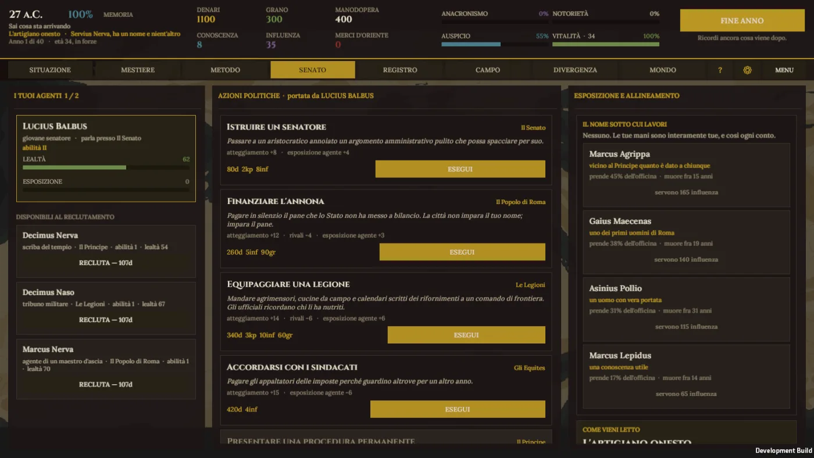
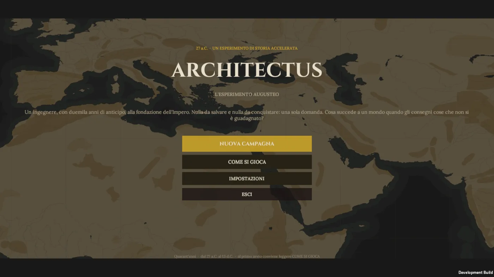
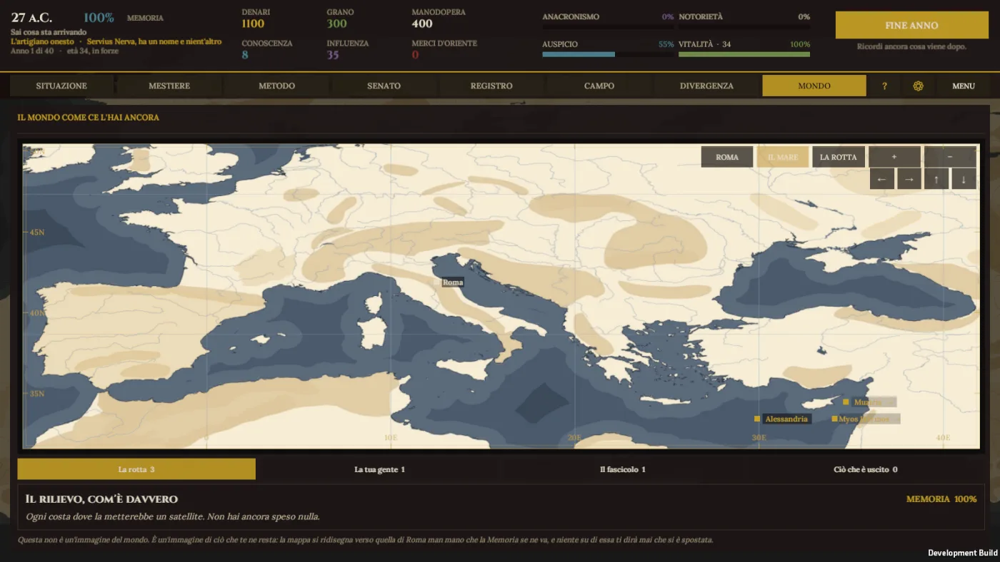
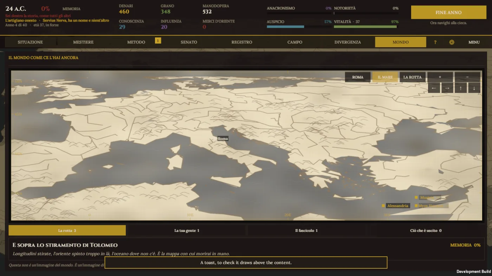
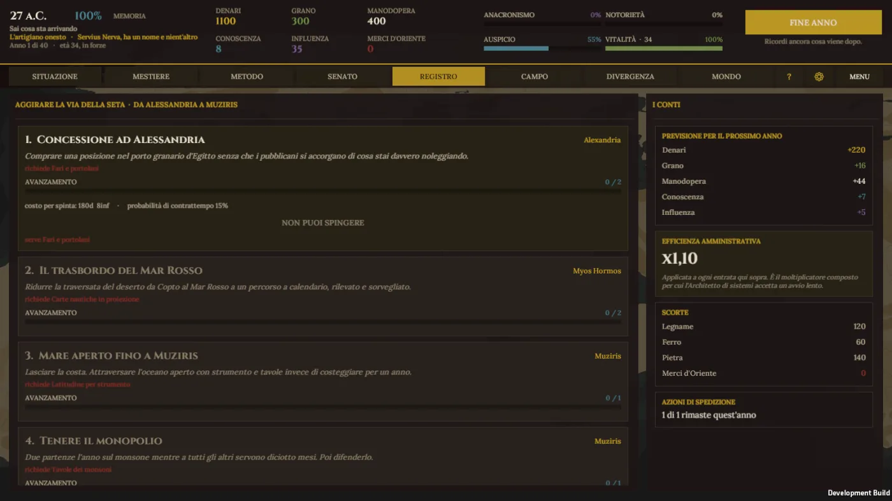
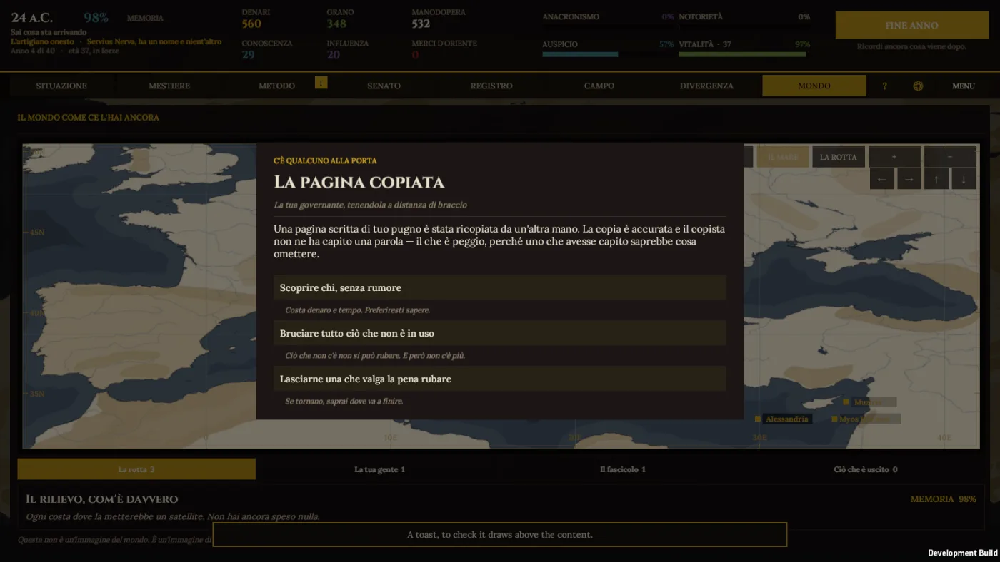
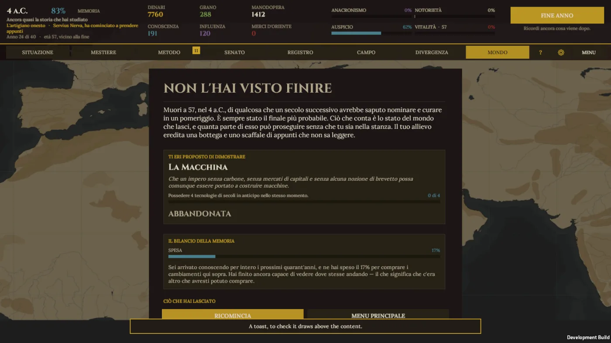

Of the Senate
Every patron has a name, a price, and a death date pulled from the record — Agrippa in 12 B.C., Maecenas in 8. Your standing in Rome is spent on people who will actually die on schedule, not a reputation meter that resets.

Vol. I · Register of the Augustan Experiment
27 B.C. A modern engineer, two thousand years early, at the founding of an empire that hasn't earned what it's about to be given.

Octavian has just become Augustus. You arrive with two thousand years of hindsight — not to save Rome, which doesn't need saving, but to run an experiment: what actually happens when a pre-industrial empire is handed things it hasn't earned and isn't yet able to hold.
At the end of the first year you declare what you're trying to prove — four technologies at once, a successor who can explain eight of them, a trade monopoly held five years, or your own silence bought with a dossier no one ever opens. The ending judges that claim, not a score.
Architectus already runs start to finish — twenty-one years, one sitting, nothing to install. Start below, then continue to the full beta application.
You arrive knowing the whole future. Memory is the true clock, not the calendar in the corner — every year you spend rewriting history burns a little of it. What you're shown stops being reliable long before the number hits zero, and nothing on screen tells you which readings have already started lying.


Every patron has a name, a price, and a death date pulled from the record — Agrippa in 12 B.C., Maecenas in 8. Your standing in Rome is spent on people who will actually die on schedule, not a reputation meter that resets.

A sea lane around the Silk Road, Alexandria to Muziris, four real stages long — Roman trade with India actually did explode under Augustus. You aren't inventing the shortcut, only arriving early enough to take it before anyone else can.

Two or three knocks a year, each answered with incomplete information and a real cost either way. A page in your own hand has been copied by someone else's — accurately, and they understood none of it, which is worse: someone who understood would know what to leave out.

Every system on this page already runs: the thesis, the Memory, the map that forgets, the Senate, the route, the interruptions. What's missing is testing against an actual human being — forty campaigns run against automated players so far, and not one against someone who reads. That's what the letter below is for.

— Pikosoft, maker of Architectus